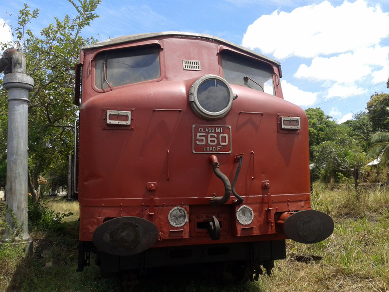
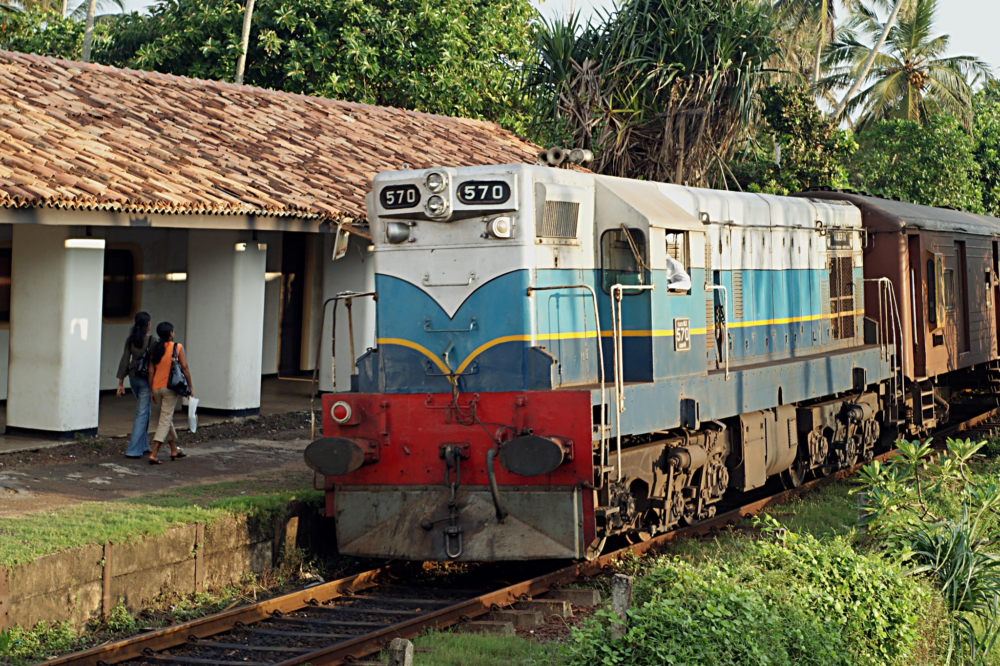

Class M1 Locomotives

In the 1950s Sri Lankan railway was seeking replacements for old rolling stock, routine replacement of which had been delayed by World War II. Specifications were for 25 locomotives with 750 hp (559 kW) power at the wheel, available from 12 mph (19 km/h) upwards, and up to an altitude of 6,200 ft (1,900 m). The train was expected to be used for suburban trains centered on Colombo, as well as mail trains in the north of the country, and trains in hill areas: approximately requirements were for a vehicle capable of pulling 550 long tons (560 t; 620 short tons) at 18 mph (29 km/h) on a gradient of 1 in 44 (2.27%) on track with 5-chain (330 ft; 101 m) reverse curves; preferably within a 80 long tons (81 t; 90 short tons) locomotive weight on 6 axles (A1A-A1A). Several firms tendered for the contact; American suppliers were unable to enter a competitive bid due to the devaluation of both the rupee and British pound.
Class M2 Locomotives

From 1954, several batches of General Motors-manufactured locomotives were imported to Sri Lanka under "The Colombo Plan". Locally called a "Canadian" engine – there are actually two classes of Canadian engine in SLR – the other one is Class M4. Since these engine were imported under grants from the Canadian government, class M2 locomotives are named with Canadian province and city names. The last two locomotives were made in the United States and imported for Cement Corporation, Sri Lanka. But they were later attached to Sri Lanka Railways locomotive fleet. They were named after two local cities – Galle and Kankasanthurei – where the cement factories were located.
Sub classes
| Sub Class | weight | Axel Arrangement | Year | No.of Locomotives |
|---|---|---|---|---|
| M2A | 79 toonnes | A1A-A1A | 1959 | 3 |
| M2B | A1A-A1A | 1958 | 2 | |
| M2C | Bo-Bo | 1961 | 2 | |
| M2D | A1A-A1A | 1966 | 2 |